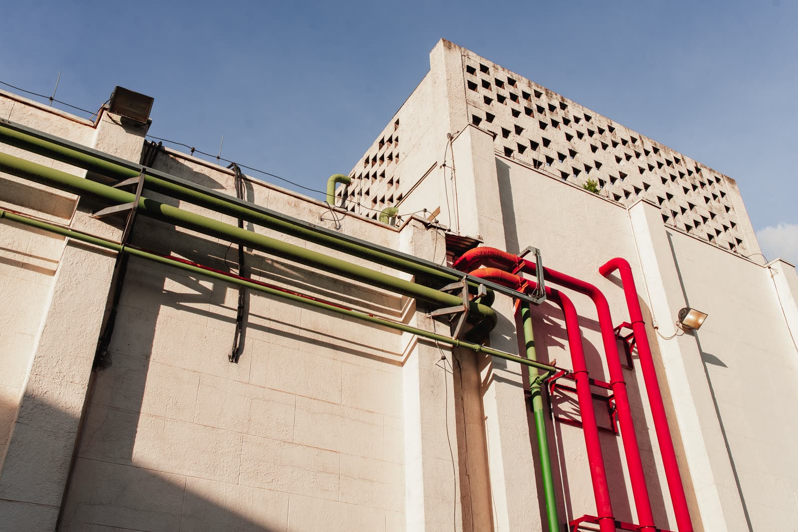
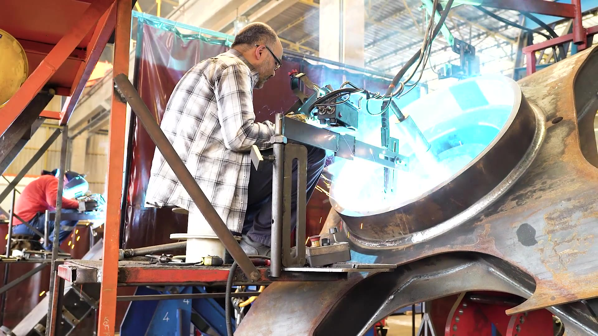

01
Preconstruction
Early estimating, constructability reviews, sequencing, procurement planning, and schedule development reduce surprises before work begins.
 HYPERSCALEINDUSTRIAL CONSTRUCTION
HYPERSCALEINDUSTRIAL CONSTRUCTIONSERVING DATA CENTERS, OIL REFINERIES & POWER PLANTS NATIONWIDE
(281) 942-7030Founded on Faith, Forged in Steel
HYPERSCALE / SERVICES
From the first field measurement through final turnover, Hyperscale brings planning, fabrication, construction, and maintenance together under one accountable team.


01
Early estimating, constructability reviews, sequencing, procurement planning, and schedule development reduce surprises before work begins.
02
Controlled-shop structural and piping fabrication is supported by material tracking, inspection, and documentation.

03
Experienced supervision and skilled craft professionals deliver steel, piping, equipment, and modular systems safely in the field.

04
Planned maintenance, rapid-response outage support, and long-term partnerships protect production and asset reliability.
CORE CAPABILITIES
LET’S BUILD WHAT’S NEXT